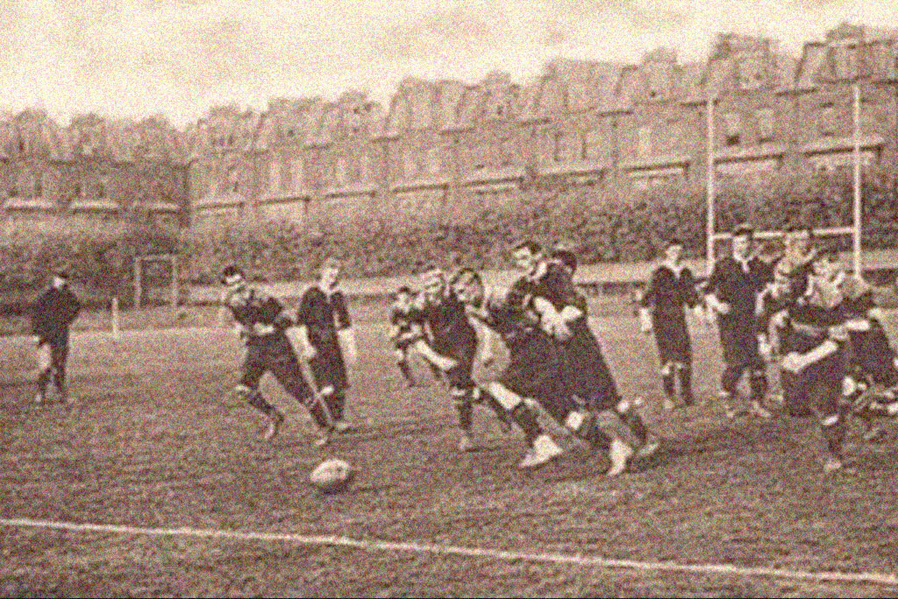

Os chineses foram os primeiros a divertirem-se chutando bolas para dentro de balizas no século III a.C. e o jogo conhecido globalmente como futebol foi formalizado em Inglaterra no século XIX. Contudo, o predecessor de todos os jogos de bola de actualidade pode ser encontrado nas Américas.

Primeiro jogo
O primeiro jogo de futebol foi disputada a 26 de Dezembro de 1860 conhecido como "Rules derby", o jogo decorreu em Inglaterra disputado entre Sheffield Footbal Club e o Hallam Footbal Club.
O jogo foi disputado na casa do Hallam Footbal Club no Sandygate Road, em Sheffield.
Primeiro clube
O primeiro club do mundo foi o Sheffield Footbal Club fundado a 24 de Outubro de 1857, atualmente o Sheffield atua Northern Premier League Division One East, uma divisão reginal na Inglaterra.